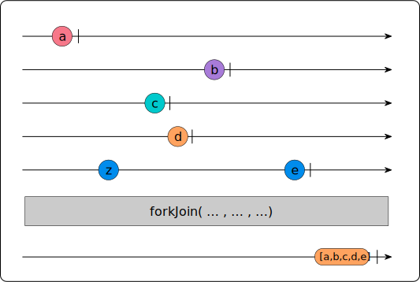
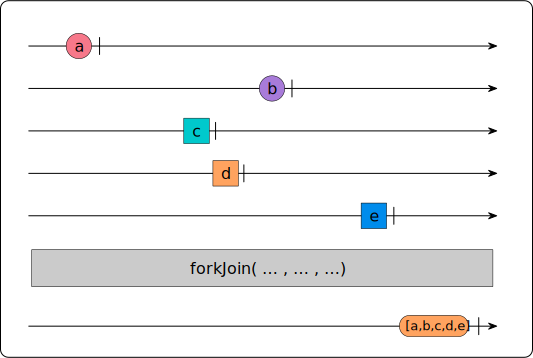
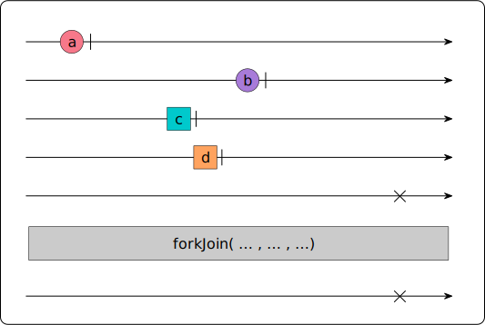

Rx.Js paradigm: resolving nested observables and side effects
Working with other people is great: You get to learn how other people think about problems and their solutions, learn new approaches and sometimes get to provide some insight into the way you think about certain things. That’s what happened to me a few times recently when it came to Rx.js, a technology near and dear to my heart.
In this post, I’m going to write about and discuss two approaches I saw that I consider to be problematic. I’ll describe the original code, why I see problems with it and how I would refactor it.
Nested Rx chains
In a recent class on web development, someone asked about an Rx.js implementation that they created in their company and how he thought that Rx.js is leading to unreadable and intertwined code. The example he showed me went something like this (abbreviated for clarity and topic changed to not identify the company):
let activeUser: User;
let activeBankList: Bank[];
let activeAccountInformation: Account[];
const userService = new UserService();
const bankService = new BankService();
const accountService = new AccountInformationService();
userService.getUserByEmail(userEmail)
.subscribe( (user: User) => {
activeUser = user;
if (!activeUser.disabled) {
bankService.getBanksForUser(user)
.subscribe( (bankInfo: Bank[]) => {
activeBankList = bankInfo;
accountService.getAccountsForUserBanks(activeUser, bankInfo)
.subscribe((allAccounts: Account[]) => {
activeAccountInformation = allAccounts;
// logic based on user here
})
})
}
});To summarize this implementation in words:
- We have a
UserService, which retrieves the user’s information based on an email address - If the returned user has access (is not “disabled”), another API call retrieves the banking information for that user
- Once the banking information is retrieved, we load all the active accounts for that user.
- Intermittently, we store any information we retrieve throughout this chain of API calls in variables as we get the data. In this example case, it’s the global scope, but it could, of course, also be class properties.
It’s the Rx.js equivalent of callback hell we used to have before Promises and Rx, where the result of one call was used to perform another — all in a long, nested structure. For many reasons, which include code clarity, unit testing and dependency of all nested calls, this is less than optimal. So in a first step, let’s get rid of the nesting in the aforementioned code using Rx paradigms.
Not addressing the variable declarations for now, which stay the same, we arrive at the following implementation:
userService.getUserByEmail(userEmail)
.pipe(
flatMap((user: User) => {
if (user.disabled) throw( new DisabledUserException(activeUser) );
else {
activeUser = user;
return bankService.getBanksForUser(user);
}
}),
flatMap((bankInfo: Bank[]) => {
activeBankList = bankInfo;
return accountService.getAccountsForUserBanks(activeUser, bankInfo)
}),
catchError((err) => {
// Handle errors, such as unauthorized users or non-existing records
})
)
.subscribe((accountInfo: Account[]) => {
// Processing goes here
});Here, I’ve flattened the Rx chain and gotten rid of the nesting by using the Rx.js
flatMap operator. I could have used the switchMap operator here as well with the
same result since the chain only ever processes one result. If you want to learn more
about the difference between the two xxMap() operators, you may want to read
a thread about flatMap vs. switchMap on stackoverflow.com
In this first step, I’ve flattened the nested implementation to a sequence of calls within
the same .pipe() operator. What stays thus far is the side effect of storing the data retrieved
by the various service calls in global variables.
The other enhancement in this code is the addition of error handling. I introduced a catchError
operator to which we provide a method that will handle any error we might receive from any of the
APIs, such as 401 Unauthorized or 404 Not found errors.
Doing pretty well here, so now let’s get rid of the side effects. The lack of side-effects is one of the hallmarks of clean, reusable functional code, enabling us to pass functions/methods to solve the same problems in multiple locations.
With side effects, i.e. accessing variables outside the function’s scope for reading or writing
purposes, we strongly tie the function to its environment and thus prevent easy reuse of our code.
Side-effect free code also helps with reasoning about a function’s action and allows us to reuse
the same method in various situations, without having to set up each environment with the expected
properties and then having to pass the context using JavaScript’s .bind() object method. Here
is the re-worked example, getting rid of the side effects:
class UserAccountInfo {
public user: User;
public bankList: Bank[];
public accountInfo: Account[];
constructor(user: User) {
this.user = user;
}
}
userService.getUserByEmail(userEmail)
.pipe(
map((user: User) => {
if (user.disabled) throw( new DisabledUserException(user) );
else return new UserAccountInfo(user);
}),
flatMap((userAcct: UserAccountInfo) => {
return bankService.getBanksForUser(userAcct.user)
.pipe(
map((bankInfo: Bank[]) => {
userAcct.bankList = bankInfo;
return userAcct;
})
);
}),
flatMap((userAcct: UserAccountInfo) => {
return accountService.getAccountsForUserBanks(userAcct.user, userAcct.bankList)
.pipe(map((acct: Account[]) => {
userAcct.accountInfo = acct;
return acct
}))
}),
catchError((err) => {
// Processing of any error, or mapping, occurs here
})
)
.subscribe((userAccountInfo: UserAccountInfo) => {
// Final state changes here
});In this segment, a few things happen:
- I introduced a new “data container” called
UserAccountInfo, which is essentially a container for the data retrieved in this example. It contains properties for the user, the corresponding list of banks as well as all the accounts. - The initial call to
getUserByEmail()is not changed an returns the same data, but - the following
map()operator takes the information from the API call, theUserobject, and converts it into an object of typeUserAccountInfo. If the user isdisabled, it throws an error and thus bypass all the other operators except thecatchAll(). - The following
flatMapexecutes a method that returns another Observable, passing theuserattribute of our just generatedUserAccountInfoobject. The method then takes the passedUserAccountInfoobject and augments it with the banking information for the user. - The previous mechanism repeats, this time loading and storing the account information in the
UserAccountInfoclass. - This far, we have had no side-effects from anywhere, only building up an object with the results of the various API calls.
- That object now gets passed to the method specified for the
onNextevent handler in the subscription. This is the place where we implement all the side-effects that we need in response to the various API calls.
One thing you probably will object to is the use of a side-effect when calling methods on the various services. We can get around that short-coming using currying of methods, turning something like this:
const aua = function(userAcct: UserAccountInfo) {
return accountService.getAccountsForUserBanks(userAcct.user, userAcct.bankList)
.pipe(map((acct: Account[]) => {
userAcct.accountInfo = acct;
return userAcct;
}))
}into something like this (variable names shortened to keep lines short for readability):
const aua = function(service: AccountService): (user: UserAccountInfo) => Observable<UserAccountInfo> {
return (userAcct: UserAccountInfo): Observable<UserAccountInfo> => {
return service.getAccountsForUserBanks(userAcct.user, userAcct.bankList)
.pipe(map((acct: Account[]) => {
userAcct.accountInfo = acct;
return userAcct;
}))
}
}This curried function accepts an instance of the API service to retrieve accounts on line 1. It
then returns a new function that accepts our UserAccountInfo class and performs an API call
on the service passed as the first parameter in line 1. This way, the function does not rely on
its environment at all and thus becomes more universally usable.
Getting there! There is just one eye-sore that I have with this code: It’s that the code is
not as self-explanatory as it could be: You’d need to read the code to understand what the
functions passed to the flatMap() operators are doing. In addition, the code structure
mixes various functionality in one Rx chain. Wouldn’t it be nice to have the code be more
expressive in what it does?
Then take a look at this:
userService.getUserByEmail(userEmail)
.pipe(
map(Ops.instantiateUserAccountInfo),
flatMap(Ops.getBanksForUser(bankService)),
flatMap(Ops.getAccountsForUser(accountService)),
catchError((err) => {
// Intermittent error handling and mapping
})
)
.subscribe(
(userAccountInfo: UserAccountInfo) => { /* Process result, state change */ },
(err) => { /* Error handling for the entire chain happens here */}
);Here, Ops is an object (with a short name to fit this space) which now houses the
side-effect free methods we’ve developed in the previous step. So this implementation changes
the following characteristics of the original code:
- The population of “global” variables during the processing has been replaced by passing a result object from operator to operator
- The result object
UserAccountInfogets passed to the subscription, where all the processing happens, including side effects on the state of the system. - The passing of a results object allows us to have side-effect free and thus easily testable methods (I will return to this side-effect free point shortly)
- A universal error handling (or mapping) was introduced through the
catchAll()operator, which is intended to map raw HTTP errors to standard errors we define in hopes that these are more explanatory and can be interpreted better and follow project standards. - We are able to group the functionality the operators provide in a nicely organized class, which will help with code organization and other people understanding what is going on. This should go a long way towards writing cleaner, more understandable and less error prone code (Certainly will make code reviews easier).
- The descriptive method names communicate even to the casual reader, or a newly onboarded developer, what is happening in this Rx chain by reading it from top to bottom — in contrast to the first version, where the user had to read every line to even get a rough idea of what’s going on.
Side effects in Rx chain
We’ve already seen the use of side effects in Rx chains, and one way to avoid them, but here is
another one I recently read about in a blog post as a recommendation on how to avoid using
array indices in Rx’s forkJoin() operator:
forkJoin(
this.http.get('api/some-data'),
language,
dateRange.pipe(tap(([startDate, endDate]) => {
this.startDate = startDate;
this.endDate = endDate;
})),
users.pipe(tap(users => this.setUsers(users))),
this.http.get('api/chart-data')
.pipe(tap(chart => this.chartData = chart))
)
.subscribe(([someData, lang]) => {
this.setWelcomeMessage(someData, lang);
// all data acquired, wire-up everything
this.launch();
});forkJoin executes all Observables passed to it, waits for all of them to complete
before emitting an event itself containing the content of the last events of each observable,
passed to it. The marble diagram for forkJoin looks like this:

The long and short of it is that we organize the various Observables in the forkJoin() in the
correct order so that we can use array destructuring in our subscription to get the values we
want into properly named variable names.
We order the Observables such that the ones we want to
use in our subscription come first. All other calls use the tap() operator to store the
different values in object properties as a side effect, thereby modifying class state at the time
a HTTPRequest completes but that the programmer has no control over — see line 4 onwards and
the use of the tap() operator.
This modification of class state is indicated in the following marble diagram by events that are displayed as squares:

I agree with the desire to not access results by numeric array index, but for that reason,
forkJoin accepts an object literal,
where the results of the various calls can be accessed through properties on an object emitted
as its result instead of numeric indices. Here’s an example:
const observableTasks = {
foo: of(1, 2, 3, 4),
bar: Promise.resolve(8),
baz: timer(4000),
};
const observable = forkJoin(observableTasks)
.subscribe(
value => console.log(value),
);
// After 4 seconds delay, it logs:
// { foo: 4, bar: 8, baz: 0 }Not only is this version more readable, it also avoids hard-to-track run-time errors which occur
in the previous implementation: Let’s say, for argument’s sake, the API call to fetch the chart
data is slow due to an overloaded server, but the call for the dateRange executes much faster,
we now have an unexpected state, since our date range has already been changed whereas we have
not finished loading the correct data set.
The fact that forkJoin only emits an event once all observables have completed does not help
here, because the observables will only notify the subscription that they are completed after
the tap() commands with the state modification will have executed.
What’s more, let’s consider the case where one of the Observables throws an onError event. In
that case, forkJoin will not emit the data of any of the observables passed to it but instead
emit an onError event as well:

We see that in this constellation, there already will have been state modifications by
the third and fourth observable stream passed to forkJoin — before it emits its
onError event. Translated, this means that we already effected a state change, even
if the observable eventually failed — the status of the system is now undefined and
possibly invalid and what’s more: This behavior is really hard to reproduce,
trouble-shoot and fix. The original, valid, state is irrevocably lost because parts of it
have been overwritten by the side effects.
This is, admittedly, a contrived example, but it shows the benefit of not populating variables in the environment out of a running Rx chain — in particular for asynchronous methods with unknown run times such as HTTP requests. In those cases, the browser could access the already changed values for some other reason — for example in Angular, a change in the data for a property binding would cause an update of the date range in the UI, but not the data for the graph, which comes later — Not to speak of the final state change in the subscription, which might happen at a much later time as well and might be disconnected from the other changes entirely.
That’s why the avoidance of side effects in a functional programming context is so critical, because it allows to better reason about our code, to improve re-usability of your existing methods and avoid hard-to-track errors.